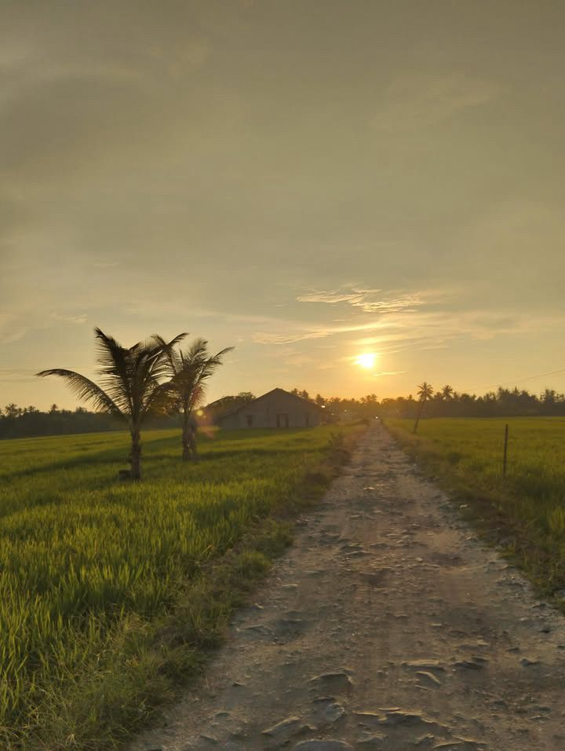
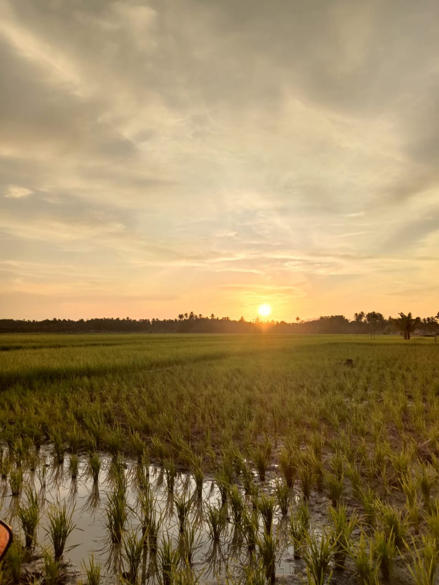
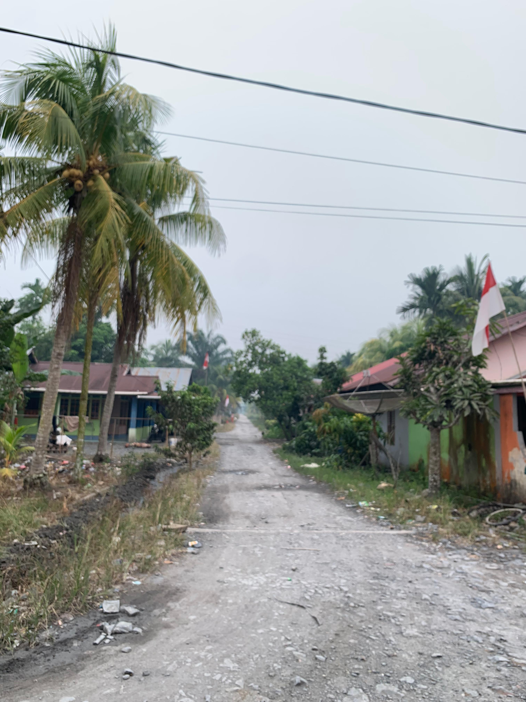
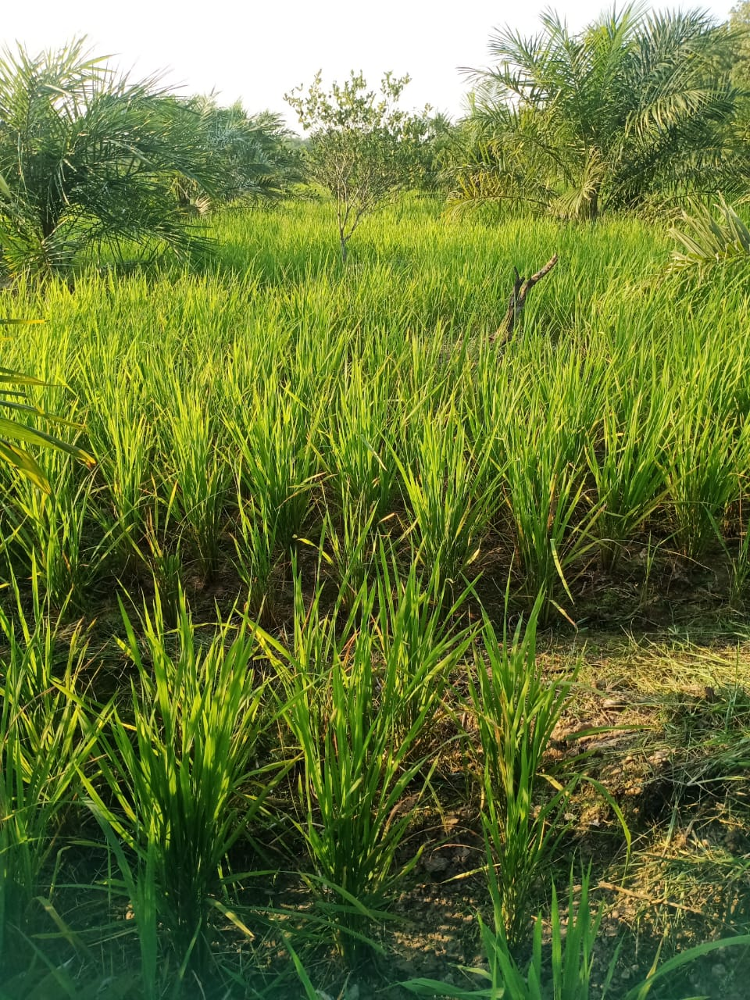
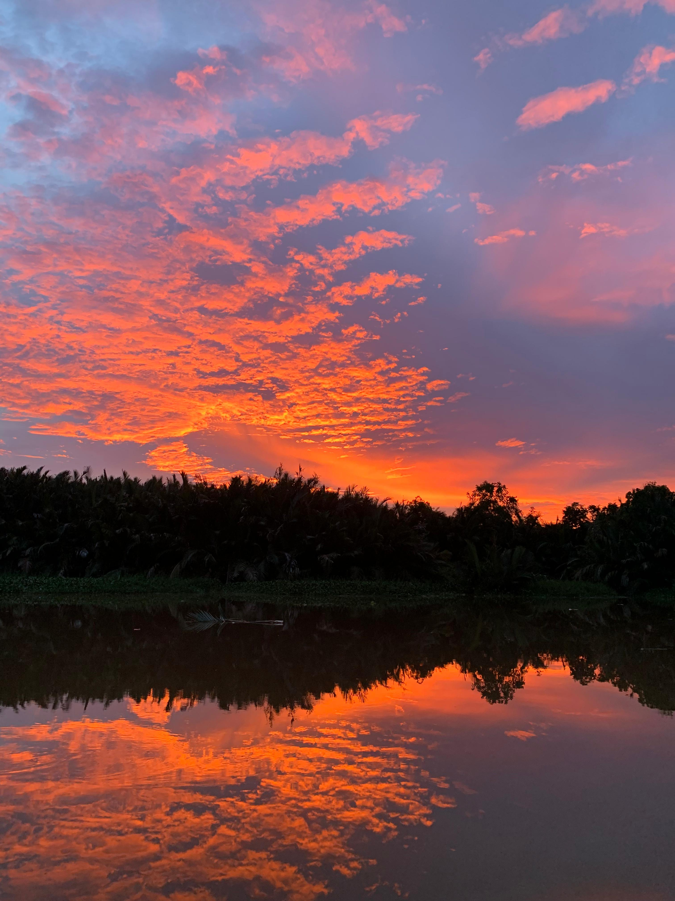

Dusun Semayang — Kecamatan Semparuk, Kabupaten Sambas
Desa Sepadu terletak di Dusun Semayang, Kecamatan Semparuk, Kabupaten Sambas, Kalimantan Barat. Desa kami memiliki udara yang segar, pemandangan alam yang hijau, serta masyarakat yang ramah, hidup rukun, dan bergotong royong. Terletak di wilayah pesisir utara Sambas, desa kami kaya akan potensi pertanian dan perkebunan.

Keindahan alam Desa Sepadu, Dusun Semayang, Semparuk
📍 Provinsi: Kalimantan Barat
🗺️ Kabupaten: Sambas
🏘️ Kecamatan: Semparuk
🌿 Dusun: Semayang
🏡 Nama Desa: Sepadu
👨👩👧👦 Penduduk: Ramah & Bergotong Royong
🌾 Mata Pencaharian: Pertanian, Perkebunan, Perikanan
🌤️ Iklim: Tropis & Sejuk
Desa Sepadu memiliki tanah yang subur dan lingkungan yang asri. Masyarakat hidup damai dengan menjaga kelestarian alam serta melestarikan budaya leluhur.
Dokumentasi keindahan alam dan kehidupan masyarakat Desa Sepadu, Dusun Semyaang:




*Ganti setiap gambar dengan foto asli Desa Sepadu yang kamu miliki!
Berikut adalah peta lokasi Desa Sepadu, Dusun Semayang, Kecamatan Semparuk:
Alamat Lengkap: Desa Sepadu, Dusun Semayang, Kecamatan Semparuk, Kabupaten Sambas, Kalimantan Barat
Masyarakat Desa Sepadu menjaga warisan budaya leluhur: